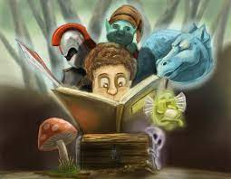
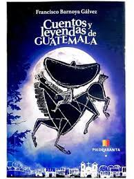
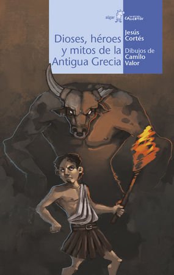
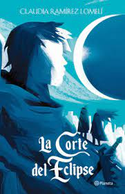
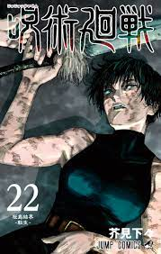
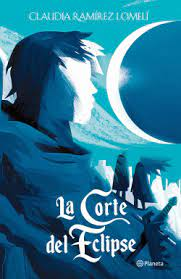
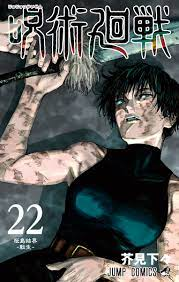

Lectura
Sobre mi experiencia
Con respecto a esta actividad, no puedo decir que sea alguien que tenga muchos conocimientos sobre otras lecturas o que sea una persona que se ponga a hacer un analisis preciso sobre todas las cosas que pasen, sin embargo, me gusta leer para matar el tiempo y hacer teorias de lo que se puede venir a futuro o simple mente comparar mi experiencia de lo leido con reseñas que veo en internet para saber las opiniones de otras personas.
Como me empezo a gustar este pasatiempo?
Bueno, primero que nada considero que es normal que muchos niños en la infacia no vean la lectura como pasatiempo, sin embargo, todo dependede como se sumerja en la lectura, en mi caso yo empeze atraves de historas cortas y con dibujos con el fin de llamar mi atencion y mantenerme entretinido ya que no me pondria a pensar en el monton de texto que hay por leer, con esto me refiero a que por lo menos en un principio no era capaz de leerme historias demasiado largas y no fue hasta que entre a básicos que me tome mas encerio esta actividad.
  


